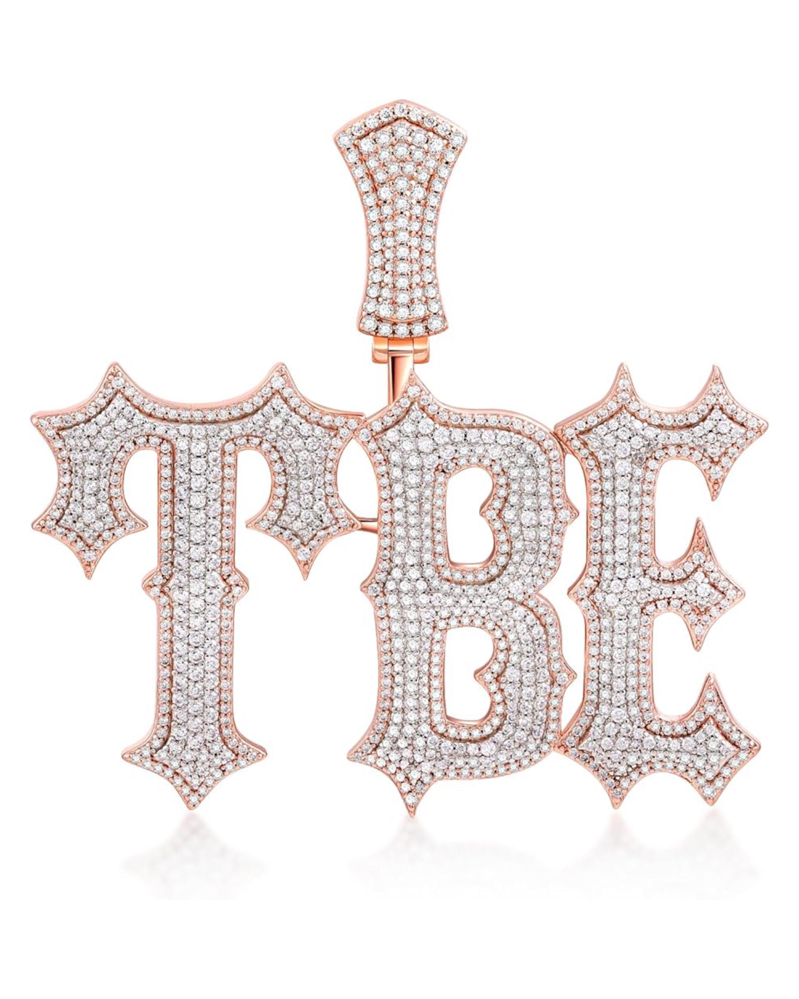

Muestrario

Aros redondos con bordes de circon y base de plata 925 con una piedra de moissanita de 6,5mm

Cadena con colgante personaliza con una base de plata 925 y chapado en oro rosado de 18k con piedras moissanita

Aros de punto de luz con base de plata con una piedra moissanita circular de 6,5mm